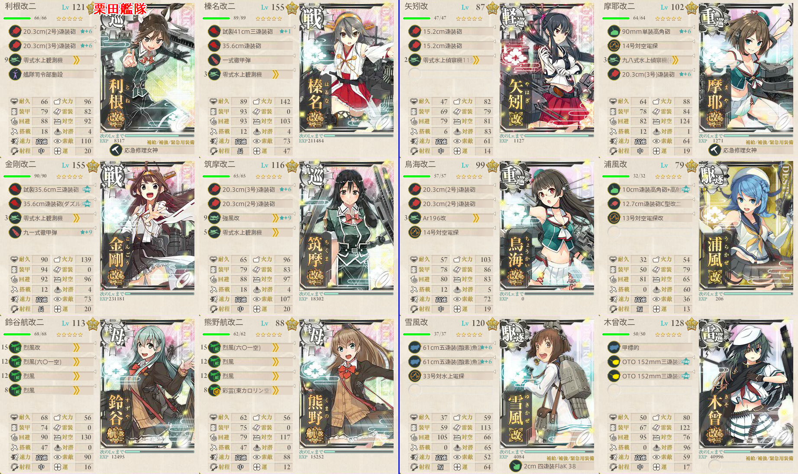

【艦これ】捷号決戦！邀撃、レイテ沖海戦(後篇) E2 シブヤン海
2018年冬イベント E2（甲作戦）
ギミック
西村艦隊で南ルートからスタートし、S/X/YでA勝利以上
- DGJMOSXY
- Sマスは甲作戦のみかつPT小鬼x5～6というクソオブクソマスなので、二式爆雷によほどの思い入れがなければ乙以下推奨
Tマス到達
- BEFILPQT
- そのままボスに突っ込むことも可能
ギミック後、スタート地点2が解放され、LPQTUVWZでボスまでたどり着けるようになる
構成
西村艦隊（SXY）
- 第三艦隊使用
最上 山城 扶桑 時雨 山雲 満潮 朝雲
空襲戦のMマスを通過するため、駆逐艦のうち一人を対空カットインにする
対潜装備を搭載する余裕はないので、Gマスを安全に抜けたければ基地航空隊で試製東海などを利用する
潜水艦を混ぜると小鬼の攻撃を吸ってくれるらしい
Tマス/ボスマス
連合艦隊
水上打撃部隊
栗田艦隊8隻以上
高速統一
第一: 利根 金剛 榛名 筑摩 鈴谷（軽空母） 熊野（軽空母）
第二: 矢矧 摩耶 鳥海 浦風 雪風 木曾

Tマスまでの場合、対潜を重視した装備にしておくと安定する
- そのままボスマスに突っ込むことも可能なので、対空重視でも良い
基地航空隊はTマスまでなら対潜でも良い
ボスまでは半径10必要
- 二式大艇を使って伸ばせば陸攻が届く
- ボス手前は制空権的に、陸攻をあまり送りたくない
出撃ログ（甲）
SXY
| 回数 | 編成 | ルート | 戦果 |
|---|---|---|---|
| 1 | 最上 山城 扶桑 時雨 山雲 満潮 朝雲 | DGJMOSXY | S 時雨大破退避 B勝利 X 扶桑大破退避 Y A勝利 |
| 2 | 最上 山城 扶桑 時雨 山雲 満潮 朝雲 | DGJMOSX | S 時雨大破退避 C敗北 X A勝利 |
| 3 | 最上 時雨 山雲 満潮 朝雲 山城 扶桑 | DGJMOS | S A勝利 |
T
| 回数 | 編成 | ルート | 戦果 | |
|---|---|---|---|---|
| 1 | 第1 | 利根 榛名 金剛 筑摩 鈴谷 熊野 | BEFILPQTUVWZ | S勝利（伊勢） |
| 第2 | 矢矧 摩耶 鳥海 浜風 磯風 木曾 | |||
ボス
| 回数 | 編成 | ルート | 戦果 | |
|---|---|---|---|---|
| 1 | 第1 | 利根 榛名 金剛 筑摩 鈴谷 熊野 | LPQTUVWZ | A勝利（藤波） |
| 第2 | 矢矧 摩耶 鳥海 浦風 雪風 木曾 | |||
| 2 | 第1 | 利根 榛名 金剛 筑摩 鈴谷 熊野 | LPQTUV | 利根大破 |
| 第2 | 矢矧 摩耶 鳥海 浦風 雪風 木曾 | |||
| 3 | 第1 | 利根 榛名 金剛 筑摩 鈴谷 熊野 | LPQTUVWZ | S勝利（高雄） |
| 第2 | 矢矧 摩耶 鳥海 浦風 雪風 木曾 | |||
| 4 | 第1 | 利根 榛名 金剛 筑摩 鈴谷 熊野 | LPQTUV | 熊野大破 |
| 第2 | 矢矧 摩耶 鳥海 浦風 雪風 木曾 | |||
| 5 | 第1 | 利根 榛名 金剛 筑摩 鈴谷 熊野 | LPQTUVWZ | S勝利（松輪） |
| 第2 | 矢矧 摩耶 鳥海 浦風 雪風 木曾 | |||
| 6 | 第1 | 利根 榛名 金剛 筑摩 鈴谷 熊野 | LPQTUVWZ | W 鈴谷大破 浦風退避 S勝利（最上） |
| 第2 | 矢矧 摩耶 鳥海 浦風 雪風 木曾 | |||
| 7 | 第1 | 利根 榛名 金剛 筑摩 鈴谷 熊野 | LPQTU | 筑摩大破 |
| 第2 | 矢矧 摩耶 鳥海 浦風 雪風 木曾 | |||
| 8 | 第1 | 利根 榛名 金剛 筑摩 鈴谷 熊野 | LPQTUVWZ | S勝利（川内） ゲージ破壊 |
| 第2 | 矢矧 摩耶 鳥海 浦風 雪風 木曾 | |||
敵編成
西村艦隊
| マス | 敵航空戦力 | 敵潜水艦 | 備考 |
|---|---|---|---|
| G | なし | あり | 潜水艦のみ |
| M | あり | なし | 空襲戦 制空323程度で優勢？ |
| S | なし | なし | 夜戦 PT小鬼x5～6 |
| X | なし | なし | 夜戦 駆逐4 PT小鬼2 |
| Y | なし | なし | 夜戦 連合艦隊 戦艦x6 + 重巡2 軽巡4 |
栗田艦隊
| マス | 敵航空戦力 | 敵潜水艦 | 備考 |
|---|---|---|---|
| E | なし | あり | 潜水艦のみ |
| F | なし | あり | 潜水艦のみ |
| I | なし | あり | 軽巡1 ツ級1 駆逐2 潜水2 |
| T | あり | なし | 空襲戦 最終戦は制空513で優勢 |
| U | あり | なし | 空襲戦 最終戦は制空648で優勢 |
| V | なし | なし | 軽巡1 ツ級1～2 駆逐3～4 |
| W | あり | なし | 軽空母2 戦艦1 ツ級1 駆逐2 制空282で優勢 軽空母たこ焼き搭載 |
| Z | あり | なし | 連合艦隊 ヲ級1 軽巡2 戦艦1 駆逐2 + 軽巡1 ツ級1 駆逐4 制空432程度で優勢？ |